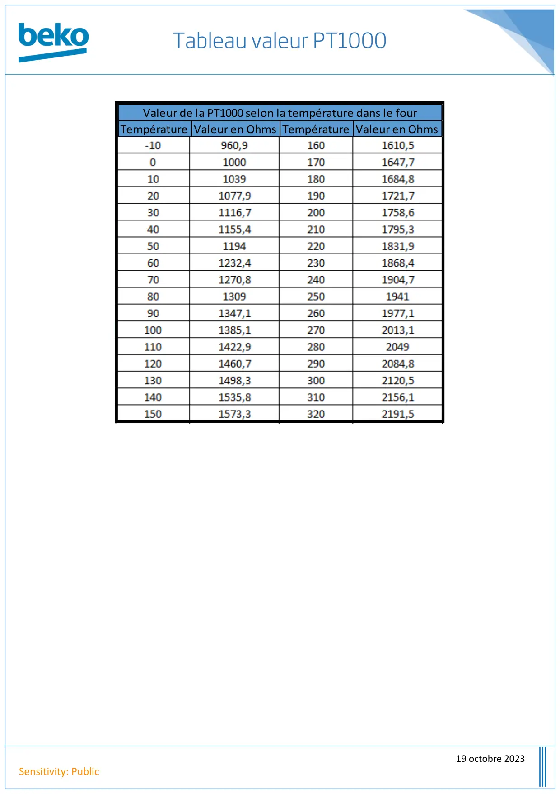

Tableau Valeur PT1000

19 octobre 2023Sensitivity: PublicTempérature Valeur en Ohms Température Valeur en OhmsValeur de la PT1000 selon la température dans le four
1 / 1


Gros électroménager
Ressources techniques SAV — Beko · Grundig · Whirlpool · Hotpoint · Indesit.
